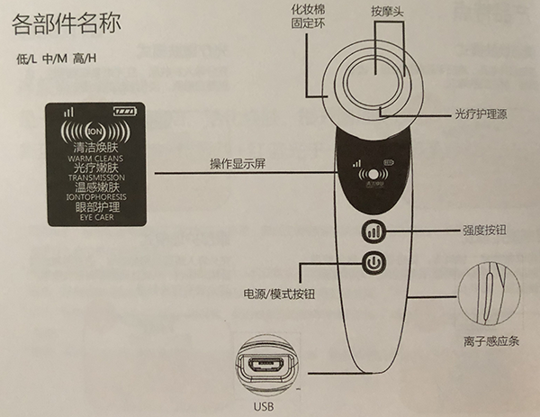

- 
| 产品名称 | 净颜嫩肤美容仪 |
| 产品型号 | DRY-004S |
| 产品尺寸 | 42*51*168mm |
| 产品净重 | 95g |
| 包装内含 | 净颜嫩肤美容仪、说明书、USB充电线 |
| 额定输入 | AC 100V-24V，50/60Hz |
| 输出电压/电流 | DC 5V/1A |
| 额定功率 | 4W |
| 额定电压/额定容量 | 3.7V/500mAH |
| 充电时间 | 约3小时 |
| 强度档位 | 3档 |
| 生产产地 | 中国制造 |
| 执行标准 | Q/SKT 006-2019 |
清洁焕肤，先搭配仪器做导出清洁，再使用洗面奶洁面（无需搭配仪器）。
深层清洁将毛孔深层污垢导出至肌肤表面，再使用洗面奶将表面污垢洗净。
每个模式5分钟内无操作后便自动关机，请按使用方法使用，切勿过度使用。
使用时需要握住机身两侧离子感应条并用仪器头接触肌肤，形成回路，使用时请保持肌肤湿润，否则仪器无法正常工作。
如需用于他人面部，需要与使用者接触肢体接触形成回路，否则仪器无法正常工作。
请按说明规定时长使用，切勿过度使用。
需搭配卸妆水/清洁型化妆水和化妆棉使用。
此模式能有效清洁毛孔中的污垢使肌肤透亮。
使用频率：1周2-3次，敏感肌可适当减少使用次数。
使用时长：不超过4分钟/次，敏感肌1-2分钟/次
取下夹棉圈 → 附上化妆棉 → 倒上卸妆水 → 长按3秒开机 → 手指按住两边感应条 → 脸部打圈清洁
需搭配爽肤水、乳液、精华使用。
此模式能增强细胞活性，淡化皱纹并帮助护肤品深层滋润皮肤。
使用频率：可每日早晚各使用1次，敏感肌可适当降低使用频率。
使用时长：不超过4分钟/次，敏感肌1-2分钟/次，护肤品吸收即可停止使用，切勿干推。
（1）将日常使用爽肤水或乳液均匀的涂抹于肌肤
（2）长按开关3秒开机，并选择“光疗嫩肤”模式
（3）握住仪器，手接触到仪器两侧的感应条，在脸部由下而上提拉
需搭配面膜使用。
此模式能温和唤醒及放松肌肤，帮助肌肤恢复光彩和活力。
使用频率：可每日使用。
（1）在脸上敷上面膜
（2）长按开关3秒开机，并选择“温感提拉”模式
（3）握住仪器，手接触到仪器两侧的感应条，在脸部由下而上提拉，使用“温感提拉”时，切勿在同一个部位停留超过三秒，避免造成肌肤不适
（4）根据个人肤质需要将剩余面部精华用水洗净或按摩吸收
需搭配眼霜或眼部精华使用。
此模式可充分导入眼霜或眼部精华，促进眼霜或眼部精华吸收，从而达到眼部美容的效果。
使用频率：可每日早晚各使用1次，敏感肌可适当降低使用频率。
使用时长：不超过4分钟/次，敏感肌1-2分钟/次，眼霜或眼部精华吸收即可停止使用，切勿干推。
（1）将眼部护肤品（如眼霜、眼膜等）均匀涂抹于眼睛四周
（2）长按开关键3秒开机，并选择“眼部护理”模式
（3）握住仪器，手接触到仪器两侧的感应条，使用点状按压手法，按摩头从内眼角到眼尾轻轻进行点压按摩。眼部护理红光默认为关闭状态，可根据需求短按强度键自行开启红光，再按一次强度建开启蓝光，再按一次强度建关闭光源。
下巴 → 将按摩头放于下巴正中间，向鬓角处以弧形守法，以2秒匀速提拉按摩
面际线 → 将机身置于下鬓角位置，向颧骨处以2秒匀速由下往上提拉按摩
脸颊 → （1）将按摩头贴于唇角旁边，有颧骨处由下向上弧形手法，以2秒匀速提拉按摩
（2）将按摩头贴于唇角旁边，向耳垂方向以弧形手法，以2秒匀速提拉按摩
眼部 → 搭配眼霜或眼部精华，使用点状按压手法，按摩头从内眼角至眼尾轻轻进行点压按摩，每个点停留2秒，减疲劳，促进吸收。
唤醒肌肤 + 舒缓水肿 + 贴服妆容
促进肌肤吸收 + 强润滋养 + 彻夜修复